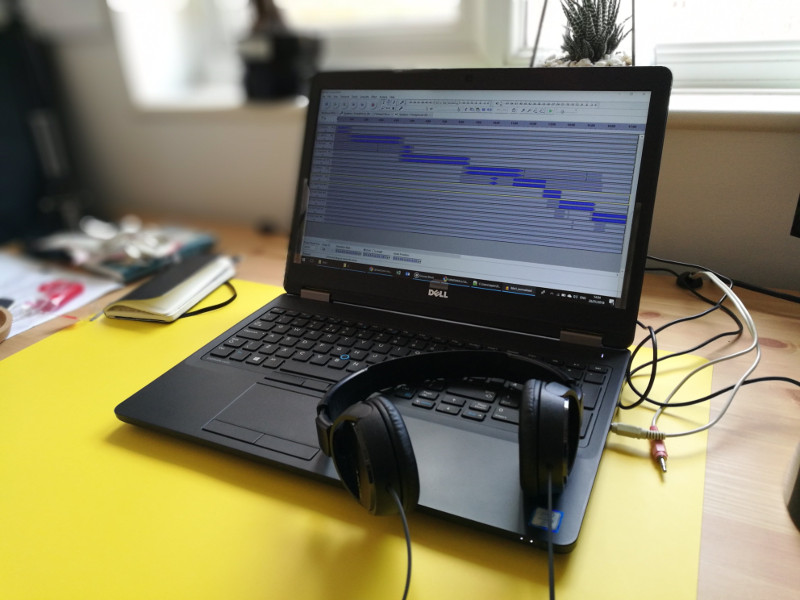

Pan de Trigo Voyages - 2018 Remastered
I finally got around to uploading a version of a mixtape made with friend
Martin (Mooch) in 2014. The original levels were never right so I've tidied things up
for this 2018 Remastered version.
Tracklist
The tracks in the order they first appear:
- Andrew Bird - Ethnio Invention 2
- Jeff Wayne - War of the Worlds
- MinionTV - (not sure of track name)
- Bombay Bicyle Club - Overdone
- Taylor Mcferrin - The Antidote
- The Acid - Animal
- James Blake - (forgotten which track)
- James Vincent Mcmorrow- Red Dust
- Sigur Ros - Hrafntinna
- Fleetwood Mac - The Chain
- Jacques Dutronc - Les Cactus
- Jenny Lewis - Little Bird
- Jenny O. - Good Love
- Mark Knopfler - Sailing to Philadelphia
- Urge Overkill - Girl, You'll Be A Woman Soon
- MinionTV - (forgotten the name sorry)
Melodies and Desires
A dark, electronic mix for a rainy afternoon.
Tracklist
The tracks in the order they first appear:
- Eluvium - Movie Night Revisited
- Lykke Li - Medolies and Desires
- Greg Haines - Something Happened
- Hazylujah - Dream Logic
- Throwing Snow - Tantrum
- Rival Consoles - 3 Chords
- Hudson Mohawke - Thunder Bay
- Wiley - Bar
- Throwing Snow - Too Polite
- Lapalux - Alpha-Plus
